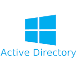
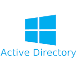
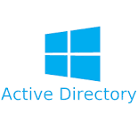

Compétences


 


-J'ai pu obtenir des bases en Python, HTML et CSS en spécialité durant mes années de lycée.
-Lors des cours en SISR nous avons mis en place plusieurs VM (Windows et Linux) notamment avec des AD.
- Mise en place d'un affichage dynamique au Lycée Sainte Catherine
- Intégration d'ipad
- Préparer les plans réseaux en vue d'une restructuration
- Creation de machines virtuel windows et linux, avec service active diretory

-J'ai pu obtenir des bases en Python, HTML et CSS en spécialité durant mes années de lycée.
-Lors des cours en SISR nous avons mis en place plusieurs VM (Windows et Linux) notamment avec des AD.